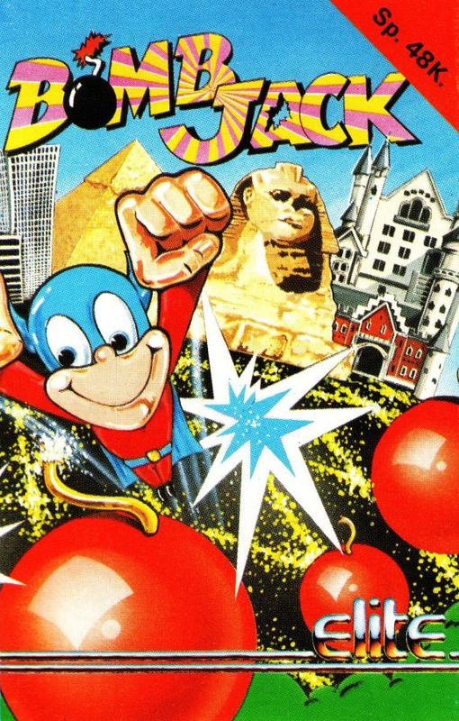
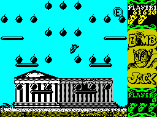
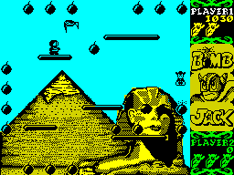
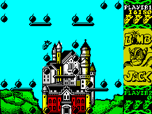

Bombjack


{kind=link}

| Publisher: | Elite |
| Price: | £7.95 |
| Year: | 1986 |
| Source: | CRASH, Issue 27 |

Bombjack is the Spectrum version of a respectably successful Tehkan arcade game from a couple of years back.
Bombjack is a super powered hero who has dedicated his life to truth, freedom and defusing bombs. Unfortunately the inhabitants of his cosy world are far from benign, and their favourite occupation is hassling and harassing Mr Jack. Their touch is deadly and contact with any of them snatches away one of the three lives he has during superheroing activities.

In his quest to dispose of bombs, our superhero is far from parochial, travelling around the world to continue his quest. There are five different locations, each containing a backdrop depicting a famous place. Each screen contains twenty four bombs, which are of the traditional ‘bowling ball with a bit of string on it’ kind. Whoever made these explosive devices was not exactly skilful, since they never ever explode, no matter how long the fuses fizzle.
Bomb disposal is Bombjack’s hobby and the little chap sproings around the platforms on a screen gathering up the explosive devices. Your little caped crusader can leap into the air and move left and right — and there’s a turbo leap option which sends Bombjack sproinging upwards in a real mega bound. Bombs are collected by travelling over them, and when the first bomb on a screen is in the bag a fuse bursts into life on another bomb. It doesn’t really matter if you don’t run straight off and get the active bomb, but if you do a bonus is put your way. Collect twenty three bombs in the active state and a whopping 60,000 point bonus is put your way. Once all the bombs on screen have been collected, Bombjack materialises in the middle of the next screen.

collect. All in a day’s work for
BOMBJACK as he does the bizz with the
bombs in Elite System’s latest arcade conversion
Each screen consists of a pretty scene with the bombs and platforms overlaid. Your hero can’t jump through the platforms but he can run along them. Bombjack is governed by all the correct and proper laws of gravity and if the minuscule chappy takes a bound into the air then he also has to fall down. Repeated bashings on the fire button cause him to drift down at a slower rate. If you’re playing with a joystick, pushing up while sproinging skyward puts the little sprite into turbo jump mode and pulling down with the fire button held down curtails the super hero’s sky flying activities. In keyboard mode you can choose to play with Turbo Jump activated or deactivated.

he cavorts around the screen avoiding
the nasties while he gathers up bombs.
He’s in Egypt at the moment, hence the
Sphynx
This is all fine and well but there are the nasties to terrorise the little chap. The first and most fundamental baddie to beware of is the screen-patrolling bird creature which roughly homes in on your position. Luckily it’s a slow creature of little brain which is easily outwitted. Then there are the robotic creatures who enjoy a life cycle fed by kinetic energy. The longer you spend on a screen, the quicker the baddies arrive. Robot baddies appear in the top left hand corner of the scene, materialising in mid air with a bit of an explosion to drop onto the nearest platform. The Robo nasties trundle left and right along their landing platform for a while and then decide to walk off the edge of a ledge. When a robot hits the ground the kinetic energy built up during the fall transfers the metallic life form into an airborne creature that’s all the more deadly. Other rolling ball thingies and vicious snails zoom around the screen trying to wipe your hero from the face of the game.
The nasties don’t have it all their own way, however. Every so often a disk bearing the letter ‘P’ arrives in the playing area heralded by a continuous siren wail. Jumping through this power pill immobilises all the nasties on the screen and turns them into smiling faces. Points are awarded for leaping through a disabled nasty — which is conveniently eliminated as you do so.
A magic button with the letter ‘E’ emblazoned on it adds another life to Bombjack’s supply when collected, and a Bonus button ‘B’ adds points when collected and increases the value of subsequent bombs gathered up on that screen.
CRITICISM
“This is absolutely fantastic — it’s so-o-o-o playable! All the features of the original arcade game have been crammed in, including the secret bonuses, aliens, different screen layouts — incredible. I found myself playing it for hours and hours, and even after a good long session, I kept sneaking back for another go. If you want a truly superlative arcade game which offers unbelievable addiction then got out and buy it now. If you miss it then you’re missing something special.”
“Wow! Having seen snippets of the arcade game, I reckon that Bombjack is pretty hot as a copy of the original. The one problem is that it really seems to be a bit easy for the first few screens; after a few rounds though, it starts to get pretty tough! The sound, graphics and colour are all great and the game’s playable too. Everything is polished, and just about as it should be. Some of the backgrounds are really excellent, and a good bit of strategy is needed to get past the first few rounds with maximum points. Bombjack is one of the best arcade conversions I’ve seen on the Spectrum for a long time. Get it!”
“Bombjack is another great little game, packed full of addictiveness and high-scores. Although it looks very simple to an onlooker you realise that it is full of that same mysterious element that kept everyone playing Roller Coaster well on into the night. The game contains all the features of the arcade version, but I felt it didn’t play as well — although this doesn’t detract from the game at all. Great fun can be had with the two player option which allows proper challenges to be set up. It’s so simple but so addictive. At £7.95 it’s a give away and should provide endless hours of enjoyment and frustration.”
COMMENTS
| Control keys: | M right, N left, Q extra jumping ability, A increase rate of descent, X jump |
| Joystick: | Kempston, Interface 2 |
| Keyboard play: | Responsive |
| Use of colour: | Jolly nice |
| Graphics: | Great |
| Sound: | Little more than spot effects |
| Skill levels: | Gets harder the further you go |
| Screens: | Five backdrops and lots of different bomb formations |
| General rating: | A great arcade conversion, don’t miss it |
| Use of computer: | 91% |
| Graphics: | 92% |
| Playability: | 95% |
| Getting started: | 91% |
| Addictive qualities: | 94% |
| Value for money: | 92% |
| Overall: | 92% |